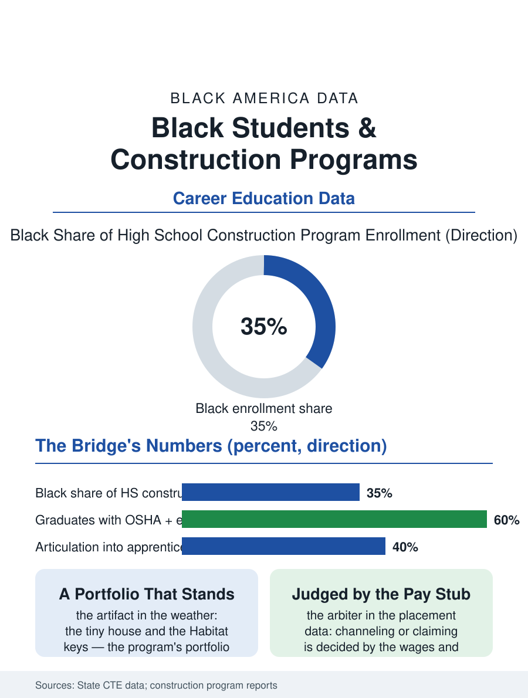

Black Education
Built by the Students: Black Students and Construction Programs
The tiny house as the curriculum, the OSHA card as the floor, and a portfolio that stands in the weather. The construction program file.

The construction trades program is the CTE file's bridge to the building boom: the high school shop where the framing, the wiring's basics, and the safety culture are taught against the construction file's standing labor shortage, with Black enrollment in the urban programs reflecting both the trade's history in the community and its current wages. This article reads the construction program file.
The Shop and the Site
The program's pedagogy is the project's: the tiny house and the Habitat build and the school's own renovations serving as the curriculum's text, the student's hours divided between the shop's stations and the site's weather in the pattern of the trade itself, with the industry's partnership, the contractors' donated materials and the guest foremen of the advisory board, supplying the currency the classroom's budget cannot. The certifications stack as the file's currency in the other trades' pattern, the OSHA card as the floor, the industry's entry credentials and the pre-apprenticeship's articulation into the union and open-shop apprenticeships as the program's designed exits, whose possession in the placement data sorts the graduate's first wage as cleanly as the welding coupon does. The lab's safety file is the program's first subject as in the booth's, the saw and the ladder and the trench taught as the trade's permanent conditions, in a school whose liability office is the curriculum's silent co-author. The math file inside the shop deserves the program's defense in its own terms, because the framing's geometry and the stair's calculation are the applied mathematics whose classroom version the same students failed in the abstract, a translation the CTE research identifies as the model's cognitive core, the tape measure succeeding where the worksheet did not because the error announces itself in the wood. The program's graduates who do choose the college file carry the shop's earnings into the construction management degree's tuition in the pattern of the working student's, the industry's own ladder having a classroom at its top as well as its base.
The Shortage's Terms
The market awaiting the graduate is the construction file's own: the shortage's wages at the entry rung, the foreman's eye for the program's known graduates in the strong districts, and the physical toll's honesty owed in the same lesson as the wage, the trade's decades on the body in the occupational files. The program's critics file the tracking brief against the file's demographics, the construction lab's Black and male concentration being read, as in the cosmetology file's mirror, as the channeling or the claiming depending on the reader, with the placement and wage data being the argument's agreed arbiter and the college-for-all era's reconsideration, the bachelor's debt file's numbers, having shifted the arbiter's recent verdicts. The girls' line in the framing crew is the booth file's pattern at the same lag.
Built by the Students
The construction file closes on the program's unique artifact, because its graduates leave behind buildings: the tiny house sold to fund the next, the Habitat family's keys handed over at the dedication the class attends, the school's own dugouts and stages, a portfolio that stands in the weather rather than in a binder, against which the program's value is audited by the community daily. The partnerships that produce the artifacts are the file's model tier, the district, the contractor, and the nonprofit builder in the three-way the funding braids. The association counts the programs' completions each year. The file's last entry is the dedication's photograph, the class in its hard hats before the house its year produced, the student at the frame's edge having framed the room she stands in, which is the CTE argument in its most literal form and the program's answer, in lumber, to every abstract version of the question. The alumni's return as the guest foremen completes the program's circuit in the strong districts, the graduate of five years past reading the current class's framing with the foreman's eye the program promised him. The house stands through its first winter as the class disperses, its frame the reunion's excuse for as long as the cohort keeps the custom. It stands; therefore the class was real. The record is the work, and the work is standing by to be read.
More in Black Education
Black Educational Attainment: High School Parity, the College Gap
About 89 percent of Black adults hold a high school diploma and one in four holds a bachelor's degree or higher — the attainment ladder, the college completion gap, and the generational trend.
Historically Black Colleges and Universities: Enrollment and Degrees
More than 100 HBCUs enroll roughly 290,000 students and award about one in six Black bachelor's degrees — an outsized share from a small sector. The federal education data.
Black College Enrollment: 2.4 Million Students
About 2.4 million Black students are enrolled in American colleges — nearly two-thirds of them women. The NCES enrollment data by sector, level, and trend.
Source: State career and technical education data; Home Builders Institute and construction pre-apprenticeship program reports.